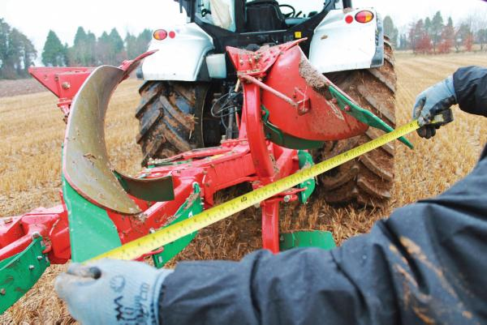
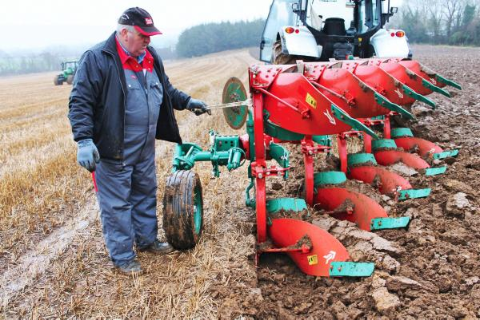
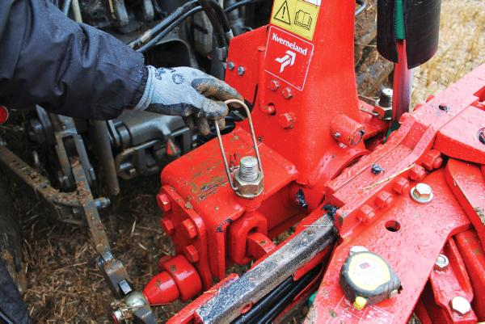
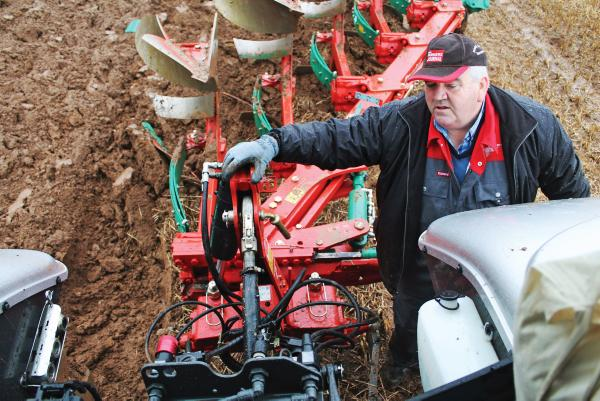
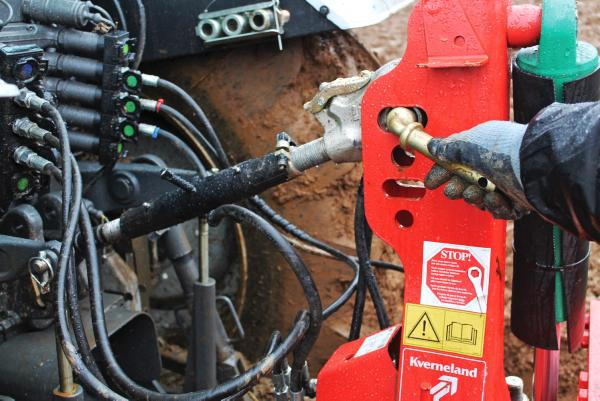
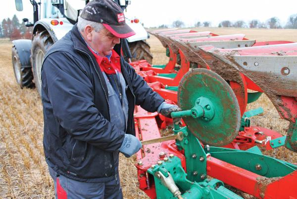
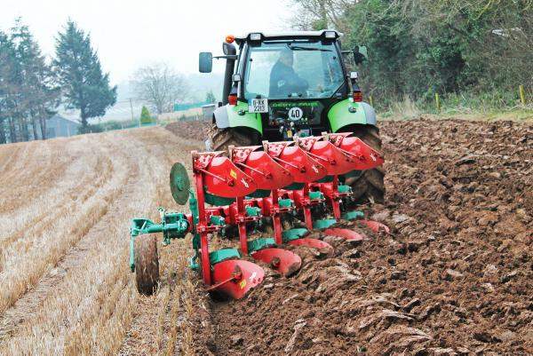
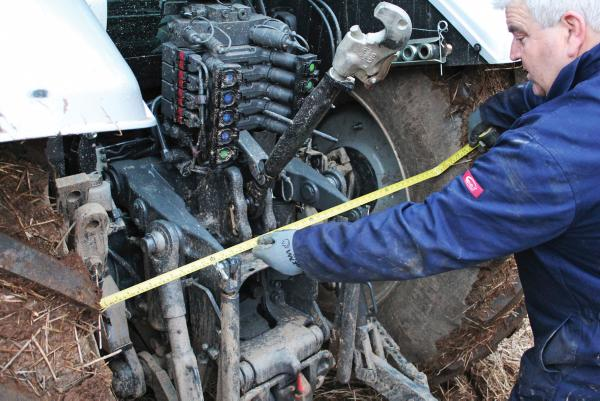

Tips on how to setup your plough the right way.
With hopes for some dry spring ground just around the corner, and the sowing of crops high on the agenda for many tillage farmers, we spoke to Kverneland Ireland’s John Colgan to get some tips on set.
John has 36 years’ experience as a demonstrator under his belt. That’s a lot of plough settings in a range of different Irish conditions and we value his expertise.
All too often, we hook up to a plough without too much consideration for the correct set-up. As long as the ploughing looks reasonable, then that’s fine is more often than not the attitude. I would be as guilty as the next on that score. Go back 20 years and more, setting up a plough correctly wasn’t just important, it was crucial. Why?
Most ploughing was done with an 80 horsepower, two wheel drive tractor carrying a four furrow conventional plough and ploughing maybe 16 inches.
If the plough and tractor was not set-up properly then the tractor literally could not pull it. Later, four-wheel-drive tractors with 50% more power, ploughing the same amount of ground meant that settings could be ‘rushed’. Today, correct settings are now more important than ever. This is because, while a tractor will plough with a poorly set-up plough, it will certainly consume much more diesel and put both the tractor and plough under unnecessary pressure.
With fuel prices remaining so high, we felt that it was a good time for a refresher article on plough set-up. John Colgan brought down a Kverneland ES85 to the farm. This is a five furrow hydraulic vary-width reversible plough which he says is popular among cereal growers.
The heavier duty EG model, he explains, is more popular among potato and vegetable growers, and, in general, anyone who does deep ploughing.The plough had a 300 headstock to cater for the extra power required for this type of ploughing and is equipped with No. 9 bodies. The Kverneland ES85 will plough from 30cm to 50cm (12 inches to 20 inches) and has No. 8 bodies and a 200 headstock making it suitable for tractors up to 200hp.
The Kverneland No. 28 bodies are more popular for guys with bigger wheels because they leave a wider furrow and can cater for up to 710 tyres according to John. Kverneland No. 8s, 9s and 28s will all fit the same saddle, according to John, but need an extra stay for the longer No. 28 for our stony conditions.
John’s demo plough was equipped with trash-boards instead of skimmers because of the amount of straw and debris left on the fields this year, as many farmers have not been able to get fields cleaned off. But, as he says, they’re not for everyone. It was also fitted with a combi-wheel which allows the wheel to be used as a conventional plough wheel or as a transport wheel on the road. Going on journeys, it protects both the plough and tractor from unnecessary loading and stresses. It also makes for a more comfortable journey for the driver.
We had a Valtra N163 out on test and it was the ideal opportunity to start from scratch and set up both the plough and the tractor. To begin with, John advises taking your time when setting up a tractor and plough.“Have it right, it doesn’t take long to check the lift arm measurements and tyre pressures.”
The most important thing is to set up the tractor correctly and then forget about it because you know it correct. Any adjustment made when ploughing, only make them on the plough. The photographs tell the full story. Many thanks to John Colgan of Kverneland Ireland for his guidance. Also thanks for travelling down with his plough on short notice when there was a break in the weather and his patience when the weather deteriorated so quickly.